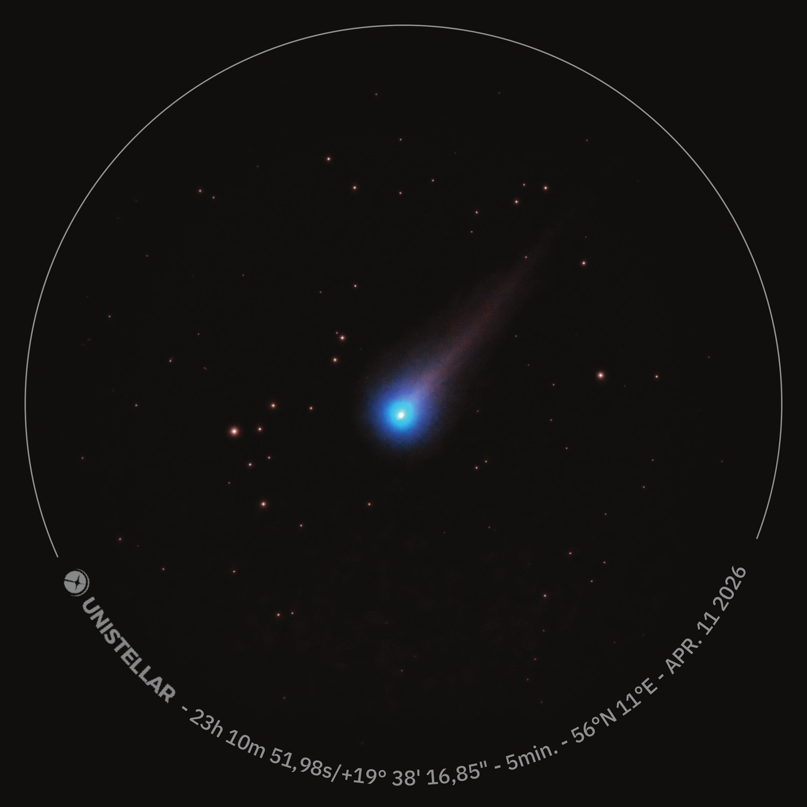
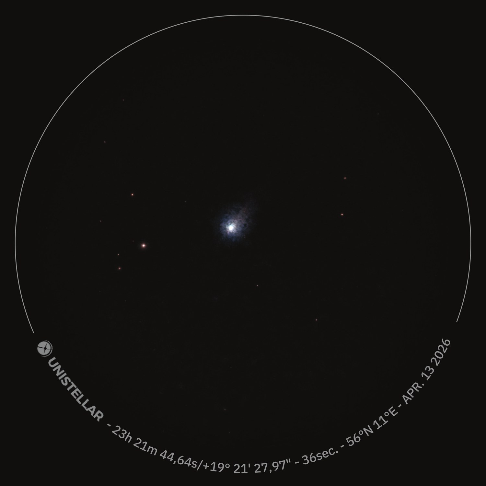
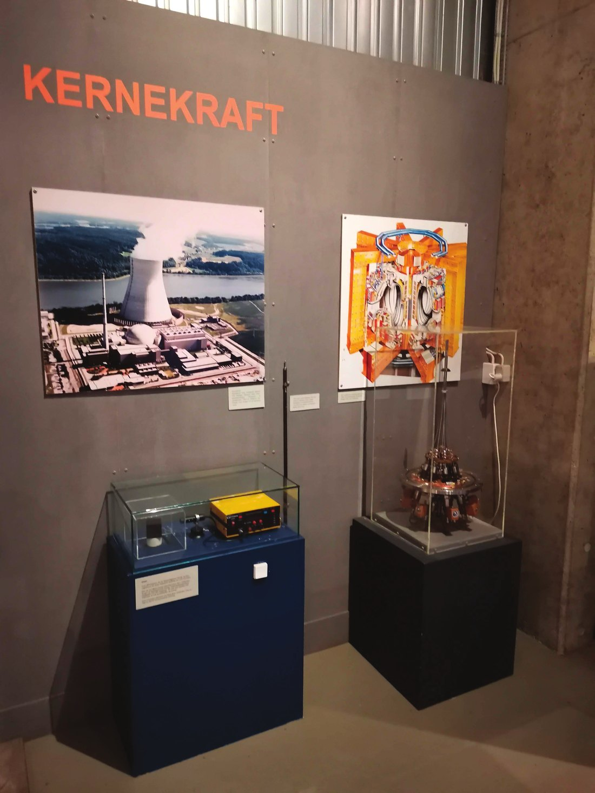

En praktisk øvelse i astrometri — banebestemmelse baseret udelukkende på egne observationer af den langperiodiske komet C/2025 R3 (PanSTARRS).
I april 2026 passerede kometen gennem det indre solsystem. Med en anslået omløbstid på omkring 170.000 år er det et objekt, menneskeheden aldrig får at se igen. For astronomi- og fysikundervisere udgør en sådan begivenhed et enestående "naturligt laboratorium" til at arbejde med klassisk mekanik og usikkerhedsberegninger sammen med eleverne.
Jeg satte mig derfor et mål: Kunne jeg, udelukkende ved hjælp af mit Unistellar eVscope 2-teleskop og en avanceret AI-sprogmodel, beregne kometens sande fysiske afstand og hastighed i rummet? Og endnu vigtigere — kunne vi validere AI'ens udregninger ved at krydstjekke dem direkte mod de officielle databaser fra NASA og ESA?
Tre nætter over Marshøj
Data blev indsamlet fra Marshøj ved Gjerrild, Danmark (56 °N, 11 °E) over tre nætter. De to første nætter stod kometen skarpt — den tredje var himlen desværre dækket af lette skyer og tåge.

2
3Det tredje billede er stærkt forringet — kometen fremstår udtværet og diffus — men de astrometriske koordinater blev reddet. Dermed havde jeg den påkrævede tidsbue på 5 dage.
Ud fra de to første billeder havde kometen flyttet sig ca. 2,75° hen over himlen — en imponerende vinkelhastighed mod baggrundsstjernerne. Men to flade 2D-billeder kan ikke adskille kometens egenhastighed fra Jordens parallakse. To-legeme-problemet dikterer, at en fuld banebestemmelse kræver mindst tre observationer for at løse de seks ukendte Kepler-baneelementer.
AI'en løser Gauss' banebestemmelse
For at oversætte de tre flade billeder til en 3D-position allierede jeg mig med en kunstig intelligens. Jeg fodrede AI'en alene med mine billeder og bad den anvende den metode, Carl Friedrich Gauss udviklede i 1801 til at bestemme dværgplaneten Ceres' bane. Det var nok.
Tre synslinjer (ρ̂) fra Jordens kendte positioner R₁,₂,₃ mod kometens ukendte 3D-positioner r₁,₂,₃.
Topocentriske vektorer
Billedernes koordinater omskrives til tre enhedsvektorer (ρ̂₁, ρ̂₂, ρ̂₃), der peger fra teleskopet mod kometen. Vektorernes længde — kometens sande afstand — er de ubekendte.
Jordens position
AI'en fastlægger Jordens præcise heliocentriske 3D-position på de tre klokkeslæt (R₁, R₂, R₃).
Koplanaritet
Da kometen følger et tyngdefelt omkring Solen, skal banen ifølge Keplers love være plan. De tre rumpositioner (r₁, r₂, r₃) må ligge i samme plan — opstillet som et ligningssystem af linearkombinationer.
Den iterative løsning
Ved hjælp af tidsforskellene opstiller AI'en en matrix og itererer sig frem mod afstanden — bl.a. ved at løse et komplekst polynomium af 8. grad, der tager højde for Solens tyngdekraft.
Processen starter med et groft første gæt, som bruges til at forfine en ny beregning — en iteration. En tilsvarende fremgangsmåde brugte jeg hos Plasmafysik-gruppen ved Risø i sommeren 1987 for at bestemme bevægelsen af en frossen deuterium-pil — brændsel til fusionsprocessen — der skulle skydes ind i fusionsreaktoren JET uden for Oxford. Dengang havde jeg med 6. grads polynomier at gøre. Nu er det 8. grads.
Hvad de tre billeder afslørede
Resultatet af AI'ens udregning var overvældende. Ud fra tre billeder fra en dansk baghave konkluderede modellen, at kometen den 13. april befandt sig:
Excentriciteten lidt større end 1 betyder, at banen er en åben hyperbel: kometen har opnået undvigelseshastighed og kommer aldrig tilbage. Vi får aldrig set den igen.
Kan man stole på en AI?
For at validere beregningerne holdt jeg straks resultaterne op imod de officielle, fuldt integrerede banemodeller fra NASAs JPL Horizons-system og orbitdeterminationsdata fra ESA. Til min store tilfredshed stemte AI'ens udregninger — baseret på mit baghave-setup — meget godt overens med de store rumorganisationers værdier.
Den officielle bane
- Observationer
- 523
- Tidsbue
- 194 dage
- Excentricitet
- 1,0003398
- 1σ-usikkerhed
- 1,5 · 10⁻⁶
Baghave-beregningen
- Observationer
- 3
- Tidsbue
- 5 dage
- Afstand
- 0,818 AU
- Fart
- 57,5 km/s
Den officielle excentricitet er fastlagt til e = 1,0003398 med en utrolig lav 1σ-usikkerhed på 1,4958 · 10⁻⁶. Det er denne præcision — nede på sjette decimal — bygget på en lang observationsbue, der gør astronomerne stensikre på, at tallet er over 1.
Den officielle 1σ-fejlmargin (±0,0000015) er for lille til at tegne her — punktet ligger sikkert i hyperbel-zonen.
The Short Arc-problem
Selvom vi ramte plet sammenlignet med ESA og NASA, er fysikken bag resultatet mere nuanceret. Deres modeller bygger på hundredvis af observationer over mange måneder. Min model bygger på tre observationer over blot fem dage — og det sidste billede var tåget.
To markante fejlkilder
Astrometrisk sampling-usikkerhed. Mit eVscope 2 har en opløsning på 1,33 buesekunder pr. pixel. På det tågede billede gør støj og manglende skarphed, at kometens centrum nemt bedømmes 3–4 pixels forkert — en lokal positionsfejl på op imod 4–5 buesekunder.
Kort observationsbue. Over et spænd på kun fem dage udgør kometens rute matematisk set næsten en fuldstændig lige linje. Uden krumning i data bliver ligningerne hyperfølsomme, fordi vinklerne i trekanterne bliver spidse — og fejlforplantningen enorm.
Indsætter man pixel-fejlen i algoritmen på den korte fem-dages bue, bliver den uafhængige statistiske usikkerhed:
Hvis man bad computeren beregne excentriciteten alene ud fra mine tre billeder, ville usikkerheden være massiv — den ville næppe kunne afgøre med statistisk sikkerhed, om banen er en lukket ellipse eller en åben hyperbel.
Er en fejl på 7,5 mio. km massiv?
Skal ESA lande en rumsonde på kometen, som de gjorde med Rosetta, er svaret ja. Men regner vi det om til en relativ procentuel usikkerhed, svarer det til blot 6,1 % fejl på afstandsmålingen.
At man med et forbrugerteleskop fra en diset dansk baghave — assisteret af kunstig intelligens — kan måle afstanden til en isklump 122 mio. km væk med næsten 94 % sikkerhed, er ikke en massiv fejl. Det er en massiv pædagogisk succes.
Afstanden til kometen bestemt fra tre baghave-billeder — krydstjekket mod NASA og ESA.
Eksperimentet beviser den ufattelige styrke, der ligger i AI sammen med klassisk celest mekanik, og udgør en oplagt projektidé til tværfaglige forløb mellem fysik, matematik og informatik. Lærere skal tage AI til sig — der er et enormt potentiale i dette værktøj som talknuser.

Fra deuterium-pile til kometbaner
Den iterative metode er ikke ny for mig. Ved Risø i 1987 skulle vi gerne have opnået en indsprøjtningshastighed på over 2 km/s for deuterium-pillen — men jeg kunne konstatere, at den ikke kom over 1,8 km/s. Hastighed udregnet som en afledt størrelse straffer altid små målefejl hårdere. Indsprøjtningsmekanismen kunne jeg stolt vise frem nogle år senere til et par af mine børnebørn på en tur til Energimuseet.